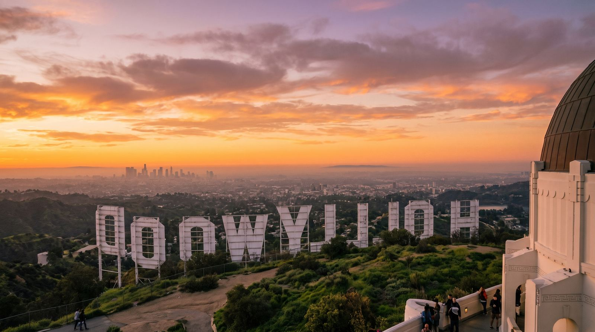

AI Business Consulting & SEO Services in Los Angeles, CA
From Hollywood studios to Silicon Beach startups, LA's diverse economy demands sophisticated digital strategies that capture attention in one of the world's most competitive markets.
Why Los Angeles Businesses Choose Farber.Inc
Home to over 4 million residents and the entertainment capital of the world, Los Angeles generates over $1 trillion in GDP annually, making it one of the largest metropolitan economies globally.
We understand the unique dynamics of the Greater Los Angeles market. Our AI-powered strategies combine deep local knowledge with enterprise-level sophistication to help Los Angeles businesses dominate their digital presence.
Our Services for Los Angeles Businesses
Comprehensive digital solutions tailored to the Greater Los Angeles market
Search Engine Optimization
Dominate Los Angeles's local search results with our data-driven SEO strategies. We optimize for the terms your Greater Los Angeles customers are actually searching for.
- Local SEO & Google Business Profile
- Technical SEO Audits
- Content Strategy & Creation
- Link Building & Citations
Answer Engine Optimization
Position your Los Angeles business as the authoritative voice in your industry. Get featured in AI responses, voice searches, and featured snippets.
- Featured Snippet Optimization
- Voice Search Readiness
- AI Citation Building
- Knowledge Graph Optimization
Generative Engine Optimization
Prepare your Los Angeles business for the AI-powered future of search. We optimize for ChatGPT, Perplexity, Google SGE, and emerging AI platforms.
- AI Search Visibility
- Brand Mention Optimization
- Structured Data Implementation
- AI Training Data Strategy
AI Business Consulting
Navigate the AI revolution with confidence. Our consulting services help Los Angeles businesses implement AI solutions that drive real results.
- AI Strategy Development
- Tool Selection & Implementation
- Workflow Automation
- Team Training & Support
Industries We Serve in Los Angeles
Specialized expertise for Greater Los Angeles's key business sectors
- Entertainment & Media
- Technology & Startups
- Fashion & Apparel
- Healthcare & Biotech
- Aerospace & Defense
Don't see your industry listed? We work with businesses across all sectors in the Greater Los Angeles area. Contact us to discuss your specific needs.
Your Local SEO Partner in Los Angeles
We understand that Los Angeles businesses need more than generic digital marketing—they need strategies that resonate with the local community. Our team combines deep expertise in SEO, AEO, and GEO with intimate knowledge of the Greater Los Angeles market.
From Hollywood, Santa Monica, Downtown LA and beyond, we help businesses throughout the region attract more customers, increase visibility, and grow revenue through intelligent digital strategies.
- Deep understanding of Los Angeles's competitive landscape
- Local citation building and NAP consistency
- Geo-targeted content strategies
- Regional link building opportunities
Los Angeles, CA
Greater Los AngelesWhy Los Angeles Businesses Choose Farber.Inc
Los Angeles is Hollywood + Silicon Beach — entertainment, tech, fashion, and the creative economy. Our CA practice is built for the specific SEO, AEO, and GEO opportunities and challenges that come with this market.
Los Angeles is one of the most economically diverse metros in the world: the global center of film and television production, the home of Silicon Beach (Snap, Hulu, Bird, Headspace, and dozens of venture-backed startups), a fashion and apparel industry that generates over $30 billion in annual sales, and the largest creative-economy cluster in the Western Hemisphere. Farber.Inc's Los Angeles practice serves the marketing teams inside this diverse economic engine.
Our Los Angeles SEO work spans the city's dominant verticals: entertainment and film (where AEO is the highest-leverage channel because casting directors and producers now use AI tools in talent research), tech and startups (where ranking for terms like 'enterprise SaaS Santa Monica' drives B2B pipeline), fashion and apparel (where SEO and AEO work together to capture intent-driven traffic from style-conscious consumers), and professional services firms serving the entertainment industry.
California-specific considerations we navigate for LA clients: CCPA / CPRA (the strictest state privacy regime in the U.S.), sector-specific licensing (California Medical Board, State Bar of California, Department of Insurance), and the California Consumer Privacy Act's evolving rules around automated decision-making and AI-driven marketing. Compliance review is built into our standard content workflow.
5 Questions Los Angeles businesses Buyers Ask
The questions Los Angeles businesses buyers actually ask — answered with the specific entities, timelines, and local context that matter.
SEO for Los Angeles businesses is the practice of optimizing your digital presence to rank for the queries that Greater Los Angeles buyers actually use. That means targeting the specific industries and neighborhoods that define Los Angeles (entertainment and fashion & apparel are the two we see most), building citations across the Los Angeles-focused directories and media outlets your customers trust, and earning entity authority with the geographic signals (addresses, neighborhood names, service-area pages covering Downtown LA and Santa Monica) that AI engines like ChatGPT and Google AI Overviews weight heavily when deciding which local business to cite.
Yes — and the gap is widening fast. Roughly 30% of B2B searches in 2026 now return an AI-generated answer before any organic result, and Los Angeles buyers (especially in entertainment) are early adopters of ChatGPT, Perplexity, and Microsoft Copilot for vendor research. If you're ranked #1 but not cited in the AI answer, you're invisible to a growing slice of your market. AEO (Answer Engine Optimization) and GEO (Generative Engine Optimization) close that gap, and our Los Angeles practice has helped clients get first-citation in AI answers within 4–8 weeks of starting work.
Beyond Google Business Profile, the Los Angeles-specific surfaces that move the needle for local SEO are: the Los Angeles Chamber of Commerce directory, the CA Secretary of State business search, the major local news outlets (typically a daily newspaper plus the leading alt-weekly and a business journal), Yelp and Apple Maps, and industry-specific platforms (e.g., ProductionHUB in Los Angeles for film, the SBA CA district office for federal contractors). We handle submission, monitoring, and ongoing NAP consistency across these surfaces, which is the single most under-managed lever we see in Los Angeles local SEO.
For traditional SEO in Los Angeles, meaningful page-one rankings typically take 4–8 months depending on competitive vertical and starting authority. AEO and GEO work delivers faster signals — first citations in ChatGPT, Perplexity, and Google AI Overviews typically appear within 4–8 weeks of starting work. Local-pack visibility (the Google Map results that show up for 'near me' queries in Los Angeles) usually improves within 60–90 days of a properly executed GBP and citation work. We set expectations on the first call and report against them monthly.
Most Los Angeles agencies are generalists — strong on paid media or social, weak on the technical SEO, AEO, and GEO disciplines that decide which businesses get discovered in 2026. Farber.Inc is the opposite: we are a boutique practice that does three things — AI Business Consulting, SEO, and AEO/GEO — and we do them at a senior level. Every engagement is led by a strategist (not a junior account manager), every deliverable is grounded in the entity-graph and citation work that AI engines reward, and we measure success in citations, rankings, and pipeline — not vanity metrics. Los Angeles clients get the same boutique attention as our San Francisco and New York engagements, at a price point that reflects where we are based.
Ready to Grow Your Los Angeles Business?
Schedule a free consultation to discuss how Farber.Inc can help you achieve your digital marketing goals.
Get In Touch
Stuart, FL 34994